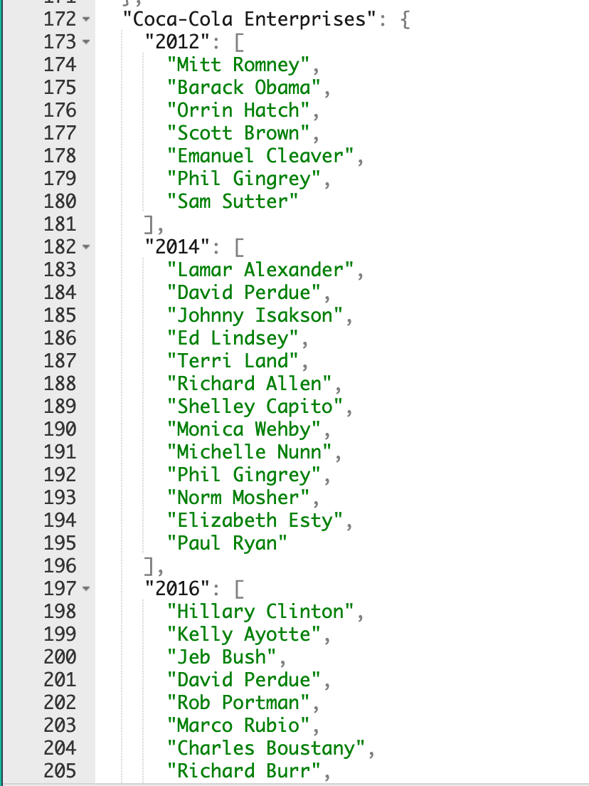
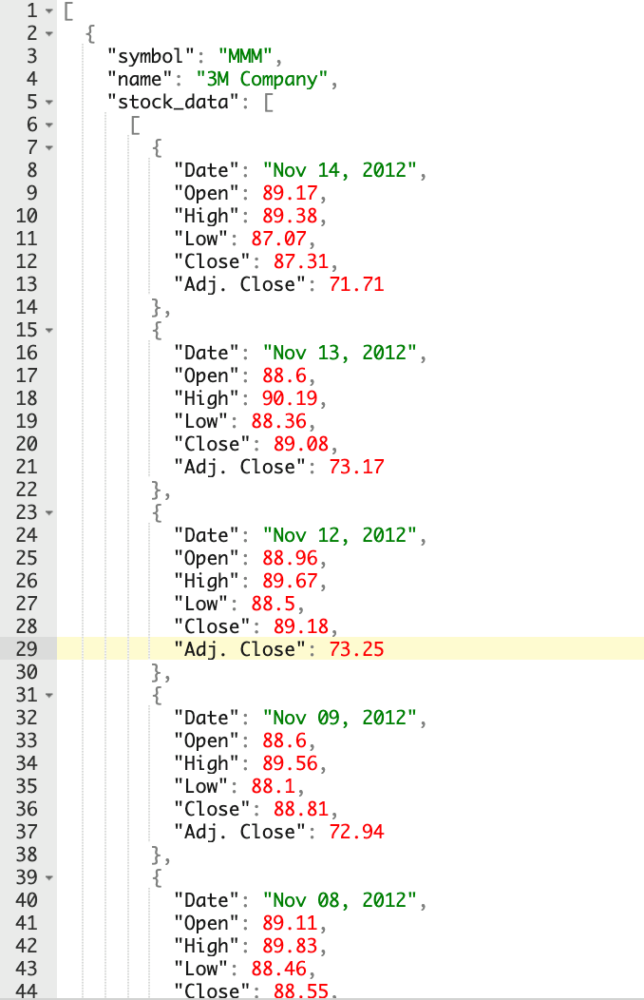
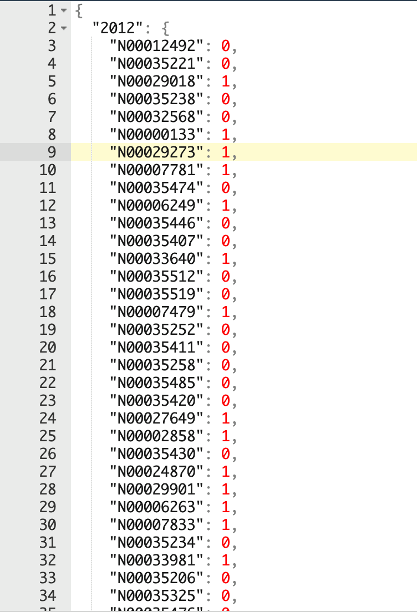

Where is the data from?
Here is a link to the data!
How was it collected?
We collected our data from a few different sources. The data about
campaign contributions to different political candidates comes
from the API provided by opensecrets.org, which is a nonprofit organization
dedicated to understanding the role of money in politics. Data on the
performance of different securities came from Yahoo Finance.
Is the source reputable?
We believe the sources to be reliable. OpenSecrets is a nonprofit, so there
is no potential for business biases, and is regularly used by various news
outlets, such as CNN. Yahoo Finance is also widely used and has no incentive
to misrepresent the data it provides.
How was the sample selected? Is it comparably big or small? Does it
contain any bias?
Below are screenshots/tables containing the style/structure of some typical data
in our tables (note we included screenshots to avoid redundancy - the examples
we chose are pretty typical of the data at large).
This table shows candidate names to their ids, we also map IDs to election
years to a boolean if they won or lost.
| Name |
ID |
|---|
| Weeks, James |
N00042037 |
| Dubberly, Shannon |
N00042242 |
| Elsasser, Kurt |
N00042644 |
| Koniz, Gary |
N00040213 |
| Emig, Zach |
N00040937 |
| Bush, Cori |
N00039373 |
| Engebretson, Margaret |
N00042733 |
| Moore, David |
N00043276 |
| Schiller, Jill |
N00042479 |
| Perkins, Jo Rae |
N00035512 |
| Caraway, Barbara Mallory |
N00033544 |
| Sam, Geraldine |
N00005912 |
| Fuller, Virginia |
N00042559 |
| Henry, James Francis Mr. |
N00041641 |
| Spano, Ross |
N00043319 |
| Sherman, Jayesun |
N00042154 |
| Aderholt, Robert B |
N00003028 |
| Freitas, Nick |
N00042367 |
| Korb, Abe |
N00043967 |
These screenshots shows how companies map to election years and candidates they
donated to, and companies to stock performance following an election. The last
one is candidate IDs to whether they won their election that year,



How clean is the data?
Are the datapoints skewed?
We do believe there is skew in the data because of the presence of districts
where the majority of voters are of one party or another. In these races,
the winner is pretty much decided from the beginning, and only the winner
usually receives donation. We may control for this by including polling
data before the election takes place.
Here is an example of a race where one candidate dominates both in
donations and polling.
How many datapoints are there?
For each company we analyzed (~750), there are 4 election cycles, and for
each election cycle, there can be anywhere from ~5 - 50 candidates that company donates to.
Are there missing values?
There are some rows where a company donated in one election cycle but
not in another, resulting in null values for the elections they did
not vote in.
Are there any duplicate values?
We do not expect any duplicates.
How is the data distributed? Are there any outliers?
There could definitely be some companies that performed disproportionately
poorly or well due to reasons unrelated to the election. One way we could
control for this would be to include a column that includes information
on a company’s industry, to compare it to company’s more similar to itself.
Did you throw any data away?
We threw away stock data for companies that were in one of the S&P 500
groups but were not shown to have donated to any candidates in these
election cycles because the data is not relevant to our question. We do
not believe this should affect or analysis.
Data Set Challenges
One area we may face challenges is that some entities will give donations
to candidates through the law firms that represent them (the company pays
the law firm who pays the candidate). On OpenSecrets, the law firm, and
not the company who paid them, is listed as the donor. This may require
us to additionally scrape the pages of the law firms instead of just using
the data from OpenSecrets to determine who the donor may have been.
We may also need to consider donations outside of political contributions
(donations to foundations, for example). However, overall we were
satisfied with how comprehensive our data set appears, and it seems
like it should be in a format that won’t be very difficult to analyze.
Name
We recognize that our team name has nothing to do with politics, but originally
we were going to do something sports related and didnt want to change.